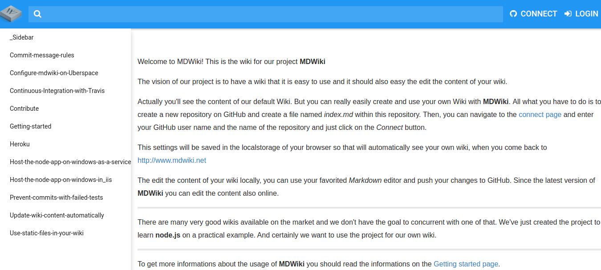
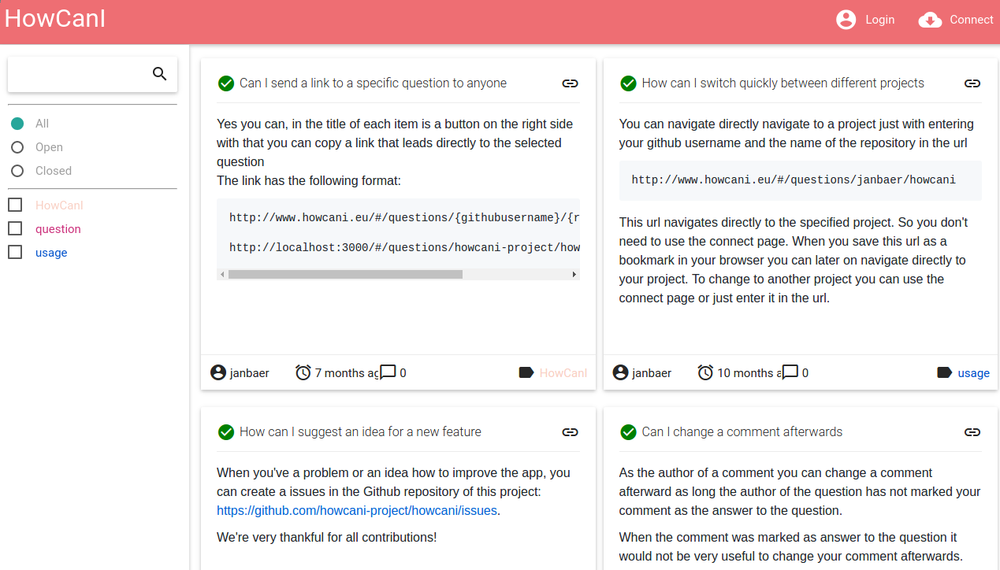

My personal projects
Introduction
On this page I want to do some advertising for the projects I worked in the last years and that are still online and ready to use for everyone who is interested.
But before I want to write some words about myself. I work now since more than 20 years as a passionate software developer for several companies and in this time I worked in a lot of software projects. But even software development was my daily job, I never lost my passion for computers and writing software in my spare time. Since I know how important it is to learn constantly with using the newest technologies and improving my own skills with all aspects of software developmenta, and the best way to do this is praticing it, I created some small software projects in my spare time. So far I remember, my first one was an add-in for Visual Basic with the name AutoCoder for managing and inserting code snippets into your current code. It was also one time mentioned as the tool of the month in the developer magazine BasicPro. After that, I wrote my first public web application with the name MyFavorites about managing bookmarks to use it in more than one web browser and it was also used by some other users.
One of my other projects was the InfoSoft Infopool, a desktop program for gathering information about everything and finding them later in an easy way.
For this article, I just did some researching in the past and since the internet will never forget anything, I just found a snapshot from my old homepage in the webarchive.
But enough words about the past, let me write about the projects I developed in the last years and that are still online and maintained by me.
MDWiki
The first project is MDWiki a web application for collecting information in form of a personal wiki. It’s reachable over mdwiki.janbaer.de. To use it, you need a Github account. The data will be stored in a git repository that you’ve created before under your username there. The software is using Node.js in the background and Angular.js 1 for the frontend. Since the data will be stored on Github in the well known Markdown format, your data are also readable directly on the Github repository web page.

HowCanI
The second project I want to present here is HowCanI my latest public project. It’s another website for collecting answers, about your own questions in a different format than a wiki. You can compare it with the well-known website www.stackoverflow.com, but it’s for personal use.

This webapp is written with using Angular 2 and it’s running as a Github webpage. Like MDWiki it’s using Github for storing the data. The questions you asked and answered yourself will be stored as issues in your own Github repository. To use it, you just have the authorize HowCanI with your Github account to use your repository.
The website is reachable under howcani.janbaer.de.
Both projects I use intensively for myself, as you can see here, so this web applications will be maintained for the next years and in the case of the cases, your data are always stored and reachable on Github under your personal account.
Disclaimer: I’m not a native English speaker, so feel free to point out grammatical and/or syntactical errors. Every respectful comment is deeply appreciated.